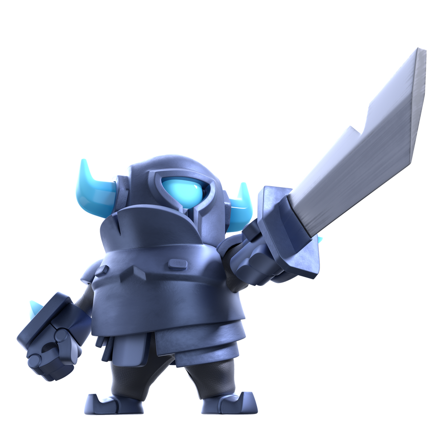
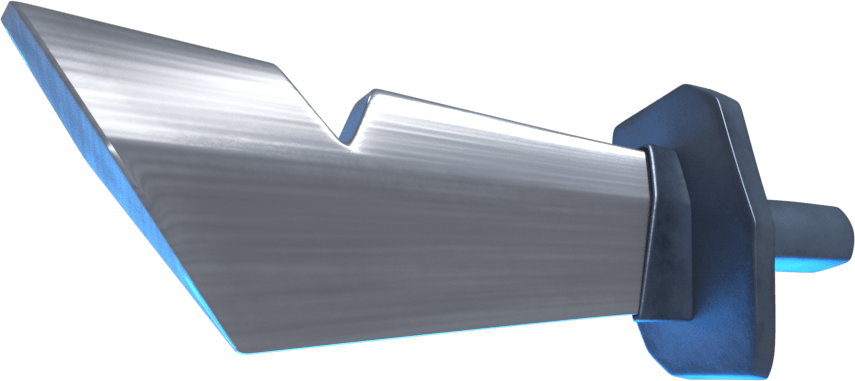

 MINI P.E.K.K.A 
 El Guerrero de Hierro en Miniatura
El Guerrero de Hierro en Miniatura

El Mini P.E.K.K.A es una de las tropas más queridas y emblemáticas del universo de Clash Royale y Clash of Clans. Aunque es pequeño en tamaño comparado con el P.E.K.K.A original, su poder de ataque es devastador, capaz de eliminar enemigos y estructuras con pocos golpes.
Es conocido por su enorme daño por segundo (DPS) y su mítica frase: "¡Panquecas!"
"PANQUECAS"
— Mini P.E.K.K.A
A pesar de su tamaño, el Mini P.E.K.K.A es una carta clave en muchas estrategias de batalla, destacando por su gran daño y su capacidad para frenar tanques enemigos como el Gigante o el Montapuercos.